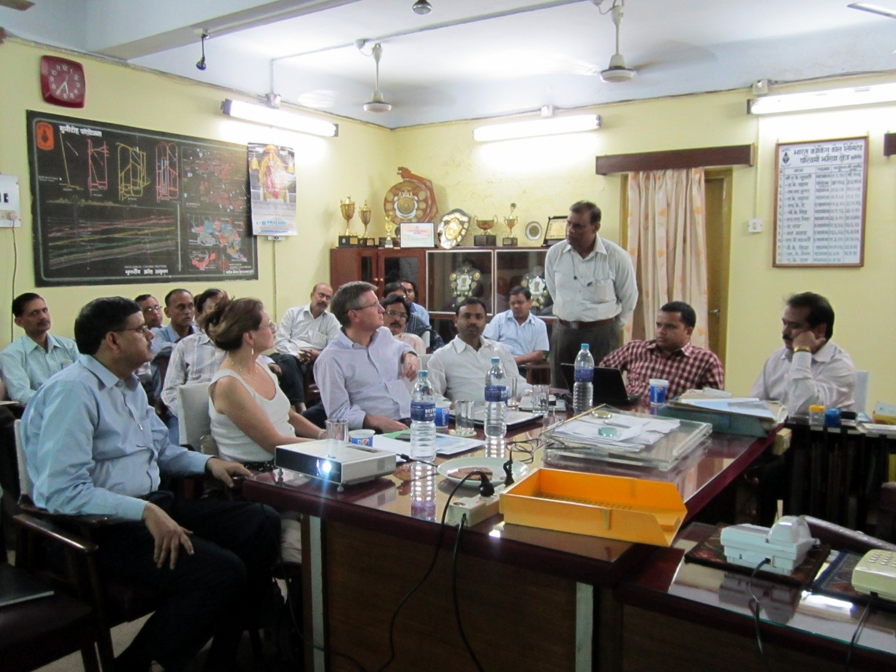

In 2015, India, the world’s second largest coal producer, announced plans to double its coal production in the next decade. Implementing coal mine methane (CMM) drainage and utilization projects will provide a new, clean energy resource for India and help reduce the country’s greenhouse gas emissions.
Historically, several barriers have prevented the successful development of methane utilization projects, including issues over CMM ownership, energy price controls, technology limitations, and market readiness. In 2008, the Indian government established the India CMM/CBM Clearinghouse (Clearinghouse) at the Central Mine Planning and Design Institute (CMPDI) in Ranchi, India with funding support from the U.S. Environmental Protection Agency (U.S. EPA). The Clearinghouse’s goal is to contribute to the commercial development of CMM/Coal Bed Methane (CBM) in India. The Clearinghouse has worked to address barriers to methane utilization projects, and several commercial CMM/CBM projects are now scheduled to be implemented in 2020.

India CMM/CBM Clearinghouse Site Visit to Moonidih Mine
One of the most significant developments to encourage CMM/CBM use in India was the 2018 decision by the Indian government to transfer CMM and CBM gas development rights to Coal India Ltd and its Subsidiaries within their coal mining leasehold blocks. Before the transfer, CMM and CBM development required additional permits and approval by the Ministry of Petroleum and Natural Gas (MoP&NG).
The Clearinghouse facilitated this critical policy change by inviting U.S. representatives to attend conferences in India to exchange information on CMM and CBM best practices. Indian officials also visited CMM projects in the United States and met with U.S. government agencies responsible for CMM and CBM project development.
Another important policy adjustment that encouraged project development was the lifting of price controls on CBM in 2017. CBM prices can now exceed the rate set by the Indian government, allowing companies to make the required capital investments to develop CMM and CBM projects.
To facilitate this policy change, the Clearinghouse collaborated with the U.S. EPA to organize a visit to the United States. During the visit, Indian government officials met with U.S. CMM and CBM producers and U.S. government agency officials. The government representatives from India learned about CMM and CBM incentives in the United States, including tax credits (“Section 29”) for unconventional gas projects between the 1980s and early 1990s. These credits were largely responsible for the rise of CBM development in the 1990s and the subsequent shale oil and gas boom in the United States.
Recently, the Clearinghouse has been working to address technology limitations in India, focusing specifically on improving drilling techniques. In previous years, Coal India Ltd personnel visited the Warrior Met Coal Mines in Alabama to learn about Warrior Met’s implementation of directional drilling technology. In April 2019, the Clearinghouse co-hosted a workshop with the Global Methane Initiative (GMI) in Ranchi, India. The workshop focused on directional drilling technology and other degasification and utilization technologies.
With this multifaceted approach and targeted strategy, India is now on track to launch its first CMM utilization project in 2020. Coal India’s Bharat Coking Coal Limited (BCCL) will implement an underground directional drilling project at the Moonidih UG mine in 2020. The project will increase methane drainage from coal seams prior to mining. BCCL plans to hire a developer to perform the drilling, produce the methane, and operate a 2 megawatt power generator to be fueled by the methane that is produced.